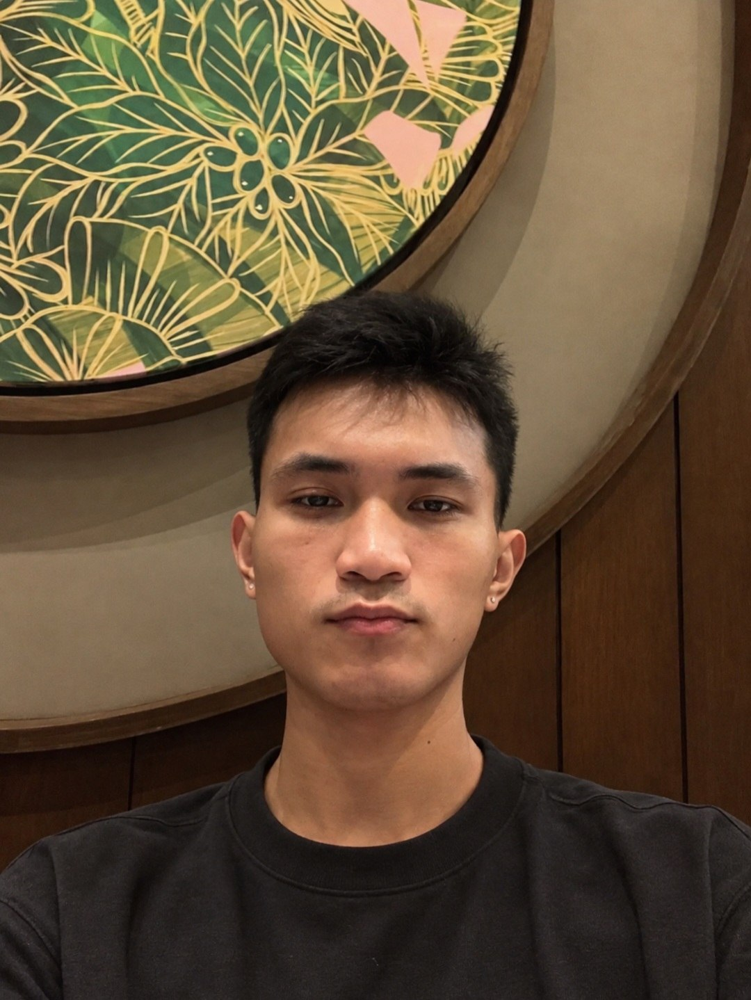
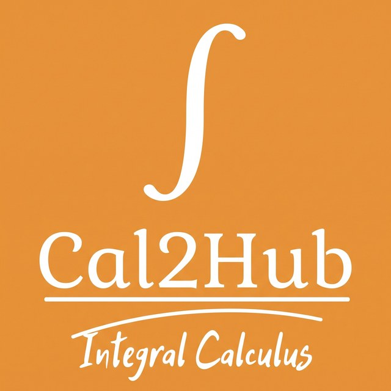

Embedded Systems
Microcontrollers, code troubleshooting, and component integration.
Hi, I'm Harwyn Lance Arabi — a fourth-year Computer Engineering student exploring software development, web technologies, and embedded systems.

I'm studying Computer Engineering at ICCT Colleges – Cainta, where I explore how software and hardware can work together to solve real problems.
I've contributed to an interactive calculus learning app and an assistive communication device. I enjoy coordinating work with teammates, troubleshooting embedded code, connecting components, and growing my front-end development skills.
A growing toolkit across embedded systems and front-end development.
Microcontrollers, code troubleshooting, and component integration.
Building foundational skills in web structure, styling, and interactivity.
Developing programming fundamentals and problem-solving skills.
Keeping work organized, coordinating tasks, and monitoring progress.
Team projects where learning, collaboration, and problem-solving meet.

LEARN · EXPLORE · PRACTICEAn offline interactive learning application designed for engineering students studying Integral Calculus.
 CONNECT · COMMUNICATE · ASSIST
CONNECT · COMMUNICATE · ASSISTAn embedded-based augmentative and alternative communication (AAC) device designed to help people with aphasia communicate daily needs.
Components: LEDs, buzzer, pushbuttons, DFPlayer Mini, speaker, and vibration motor.
Assisted customers, took orders, handled cashier transactions, and provided document-printing services.
I'm continuing to learn and explore opportunities in software and IT. Feel free to connect or check out my work.